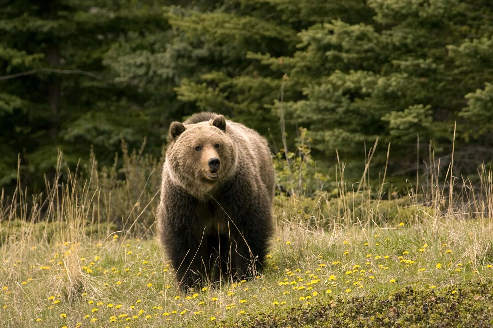

About Bear
Bear, (family Ursidae), any of eight species of large short-tailed carnivores found in the Americas, Europe, and Asia. The sun bear (Helarctos malayanus) is the smallest, often weighing less than 50 kg (110 pounds), and the largest is a subspecies of Alaskan brown bear called the Kodiak bear (Ursus arctos middendorffi; see grizzly bear). The polar bear (Ursus maritimus), however, is the largest bear species. The black bear (Ursus americanus) is common in parts of the United States and Canada.